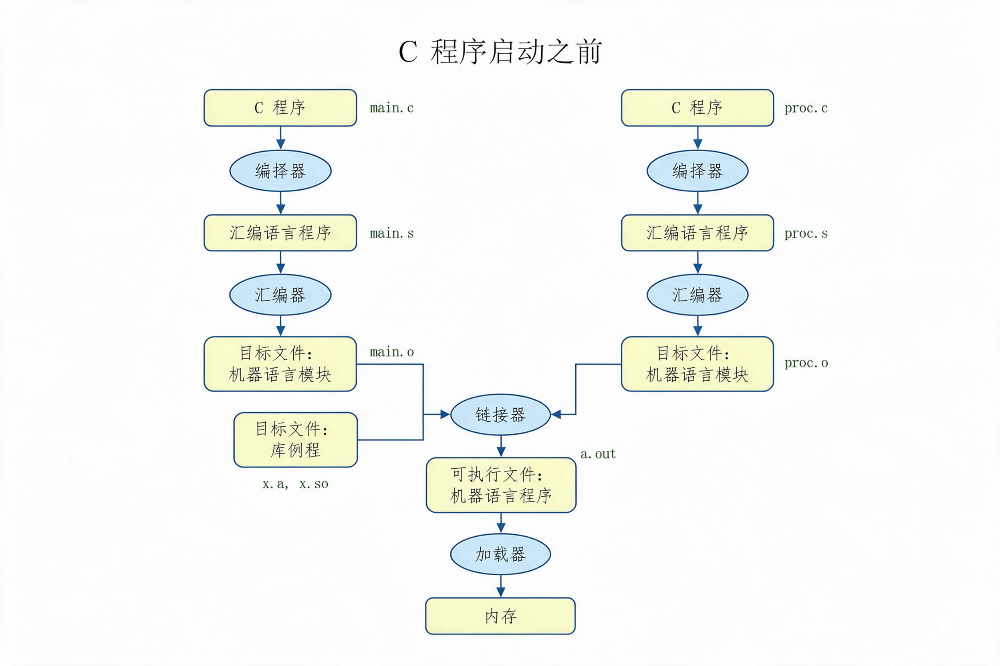

编译器 · 汇编器 · 链接器 · 加载器
int main(){
...
printf("Hello");
...
proc();
...
}
void proc(){
...
...
...
}

blt $t0, $t1, Label # 小于则转移（伪指令） → slt $t2, $t0, $t1 # $t2 = ($t0 < $t1) bne $t2, $zero, Label # $t2 ≠ 0 则转移到 Label move $t0, $t1 # 寄存器间复制（伪指令） → add $t0, $zero, $t1 # $t0 = 0 + $t1
beq $s0, $s1, L1
bne $s0, $s1, L2 j L1 L2:
| 段名 | 英文名 | 保存的内容 |
|---|---|---|
| ① 目标文件头 | object file header | 给出正文段、静态数据段的大小 |
| ② 正文段 | text segment | 机器语言的程序代码 |
| ③ 静态数据段 | static data segment | 程序运行期间所分配的数据 |
| ④ 重定位信息 | relocation information | 指出把程序装入内存时，哪些指令字、数据字依赖于绝对地址 |
| ⑤ 符号表 | symbol table | 保存未定义的标号（用于外部引用） |
| ⑥ 调试信息 | debugging information | 与编译有关的信息，供调试器等使用 |
| 头部 | 名称 | ProcA |
|---|---|---|
| 头部 | 正文大小 | 10016 |
| 头部 | 数据大小 | 2016 |
| 正文段 | 地址 | 指令 |
|---|---|---|
| 0 | lw $a0, 0($gp) | |
| 4 | jal 0 |
| 静态数据段 | 地址 | 数据 |
|---|---|---|
| 0 | (x) |
| 重定位信息 | 地址 | 指令类型 / 依存关系 |
|---|---|---|
| 0 | lw / x | |
| 4 | jal / ProcB |
| 符号表 | 标号 | 地址 |
|---|---|---|
| x | - | |
| procB | - |
| 头部 | 名称 | ProcB |
|---|---|---|
| 头部 | 正文大小 | 20016 |
| 头部 | 数据大小 | 3016 |
| 正文段 | 地址 | 指令 |
|---|---|---|
| 0 | sw $a1, 0($gp) | |
| 4 | jal 0 |
| 静态数据段 | 地址 | 数据 |
|---|---|---|
| 0 | (y) |
| 重定位信息 | 地址 | 指令类型 / 依存关系 |
|---|---|---|
| 0 | sw / y | |
| 4 | jal / ProcA |
| 符号表 | 标号 | 地址 |
|---|---|---|
| y | - | |
| procA | - |
| 头部 | 正文大小 | 30016 |
|---|---|---|
| 数据大小 | 5016 |
| 静态数据段 | 地址 | 数据 |
|---|---|---|
| 1000 000016 | (x) | |
| 1000 002016 | (y) |
| 地址 | 指令 |
|---|---|
| 0040 000016 | lw $a0, 8000($gp)16 |
| 0040 000416 | jal 40 010016 |
| … | … |
| 0040 010016 | sw $a1, 8020($gp)16 |
| 0040 010416 | jal 40 000016 |
| … |
1000 8000₁₆ + 8000₁₆ = 1000 0000₁₆ 0001 0000 0000 0000 1000 0000 0000 0000 # 1000 8000₁₆ + 1111 1111 1111 1111 1000 0000 0000 0000 # 8000₁₆（重定位量） = 0001 0000 0000 0000 0000 0000 0000 0000 # 1000 0000₁₆
1000 8000₁₆ + 8020₁₆ = 1000 0020₁₆ 0001 0000 0000 0000 1000 0000 0000 0000 # 1000 8000₁₆ + 1111 1111 1111 1111 1000 0000 0010 0000 # 8020₁₆（重定位量） = 0001 0000 0000 0000 0000 0000 0010 0000 # 1000 0020₁₆
| 地址 | 数据 |
|---|---|
| 1000 000016 | (x) |
| … | … |
| 1000 002016 | (y) |
| … | … |
void swap(int v[], int k){
int t;
t = v[k];
v[k] = v[k+1];
v[k+1] = t;
}
swap:
sll $t1, $a1, (1) # $t1 = k*4
add $t1, (2), (3) # $t1 = &(v[k])
lw $t0, ( 4 ) # t = v[k]
lw $t2, ( 5 ) # $t2 = v[k+1]
sw $t2, ( 6 ) # v[k] = $t2
sw $t0, ( 7 ) # v[k+1] = t
jr $ra # 返回
void swap(int v[], int k){
int t;
t = v[k];
v[k] = v[k+1];
v[k+1] = t;
}
swap:
sll $t1, $a1, 2 # $t1 = k*4
add $t1, $a0, $t1 # $t1 = &(v[k])
lw $t0, 0($t1) # t = v[k]
lw $t2, 4($t1) # $t2 = v[k+1]
sw $t2, 0($t1) # v[k] = $t2
sw $t0, 4($t1) # v[k+1] = t
jr $ra # 返回
| 编号 | 答案 | 含义 |
|---|---|---|
| (1) | 2 | 每个 int 占 4 字节，左移 2 位即乘以 4 |
| (2) | $a0 | 数组首地址 v |
| (3) | $t1 | 字节偏移量 k*4 |
| (4) | 0($t1) | 取 v[k] |
| (5) | 4($t1) | 取 v[k+1]，偏移 4 字节 |
| (6) | 0($t1) | 写回 v[k] |
| (7) | 4($t1) | 写回 v[k+1] |
void sort(int v[], int n){
int i, j;
for(i=0; i<n; i++){
for(j=i-1; j>=0 && v[j]>v[j+1]; j--){
swap(v,j);
}
}
}
void sort(int v[], int n){
int i, j;
for(i=0; i<n; i++)
for(j=i-1; j>=0 && v[j]>v[j+1]; j--)
swap(v,j);
}
sort: addi $sp, $sp, -20 # 把 $sp 推进 20 字节 sw $ra, 16($sp) # 保存返回地址 sw $s3, 12($sp) sw $s2, 8($sp) sw $s1, 4($sp) sw $s0, 0($sp) # 保存 s0～s3、ra ⋮
void sort(int v[], int n){
int i, j;
for(i=0; i<n; i++)
for(j=i-1; j>=0 && v[j]>v[j+1]; j--)
swap(v,j);
}
sort: addi $sp, $sp, -20 sw $ra, 16($sp) sw $s3, 12($sp) sw $s2, 8($sp) sw $s1, 4($sp) sw $s0, 0($sp) ⋮ move $s2, $a0 # v 的副本 move $s3, $a1 # n 的副本 ⋮
void sort(int v[], int n){
int i, j;
for(i=0; i<n; i++)
for(j=i-1; j>=0 && v[j]>v[j+1]; j--)
swap(v,j);
}
sort: ⋮ move $s3, $a1 move $s0, $zero # i = 0 for1tst: slt $t0, $s0, $s3 # $t0 = (i < n) beq $t0, $zero, exit1 # 不满足则跳到 exit1 ⋮
void sort(int v[], int n){
int i, j;
for(i=0; i<n; i++)
for(j=i-1; j>=0 && v[j]>v[j+1]; j--)
swap(v,j);
}
⋮ addi $s1, $s0, -1 # j = i - 1 for2tst: slti $t0, $s1, 0 # $t0 = (j < 0) bne $t0, $zero, exit2 # j < 0 则跳到 exit2 sll $t1, $s1, 2 # $t1 = j*4 add $t2, $s2, $t1 # $t2 = &(v[j]) lw $t3, 0($t2) # $t3 = v[j] lw $t4, 4($t2) # $t4 = v[j+1] slt $t0, $t4, $t3 beq $t0, $zero, exit2
void sort(int v[], int n){
int i, j;
for(i=0; i<n; i++)
for(j=i-1; j>=0 && v[j]>v[j+1]; j--)
swap(v,j);
}
⋮ slt $t0, $t4, $t3 beq $t0, $zero, exit2 ⋮ move $a0, $s2 # 设置实参 v move $a1, $s1 # 设置实参 j jal swap # 调用 swap ⋮
void sort(int v[], int n){
int i, j;
for(i=0; i<n; i++)
for(j=i-1; j>=0 && v[j]>v[j+1]; j--)
swap(v,j);
}
⋮ jal swap addi $s1, $s1, -1 # j-- j for2tst # 回到内层循环的条件判断 exit2: ⋮
void sort(int v[], int n){
int i, j;
for(i=0; i<n; i++)
for(j=i-1; j>=0 && v[j]>v[j+1]; j--)
swap(v,j);
}
exit2: addi $s0, $s0, 1 # i++ j for1tst # 回到外层循环的条件判断 exit1: ⋮
void sort(int v[], int n){
int i, j;
for(i=0; i<n; i++)
for(j=i-1; j>=0 && v[j]>v[j+1]; j--)
swap(v,j);
}
exit1: lw $s0, 0($sp) # 恢复寄存器 lw $s1, 4($sp) lw $s2, 8($sp) lw $s3, 12($sp) lw $ra, 16($sp) addi $sp, $sp, 20 # 释放栈帧 jr $ra # 返回到调用者
sort:
addi $sp, $sp, -20
sw $ra, 16($sp)
sw $s3, 12($sp)
sw $s2, 8($sp)
sw $s1, 4($sp)
sw $s0, 0($sp)
move $s2, $a0
move $s3, $a1
move $s0, $zero
for1tst:
slt $t0, $s0, $s3
beq $t0, $zero, exit1
addi $s1, $s0, -1
for2tst:
slti $t0, $s1, 0
bne $t0, $zero, exit2
sll $t1, $s1, 2
add $t2, $s2, $t1
lw $t3, 0($t2)
lw $t4, 4($t2)
slt $t0, $t4, $t3
beq $t0, $zero, exit2
move $a0, $s2
move $a1, $s1
jal swap
addi $s1, $s1, -1
j for2tst
exit2:
addi $s0, $s0, 1
j for1tst
exit1:
lw $s0, 0($sp)
lw $s1, 4($sp)
lw $s2, 8($sp)
lw $s3, 12($sp)
lw $ra, 16($sp)
addi $sp, $sp, 20
jr $ra
| 步骤 | 汇编片段 | 说明 |
|---|---|---|
| ① | addi / sw ×5 | 把 $s0～$s3、$ra 保存到栈帧 |
| ② | move $s2,$a0／$s3,$a1 | 保存实参 v、n |
| ③ | for1tst: slt / beq | 外层循环条件 i < n |
| ④ | for2tst: slti / sll / add / lw / slt | 内层循环条件与取数 |
| 步骤 | 汇编片段 | 说明 |
|---|---|---|
| ⑤ | move $a0 / move $a1 / jal swap | 调用 swap(v, j) |
| ⑥ | addi $s1,-1 / j for2tst | j-- 并回到内层判断 |
| ⑦ | addi $s0,1 / j for1tst | i++ 并回到外层判断 |
| ⑧ | lw ×5 / addi / jr $ra | 恢复寄存器并返回 |